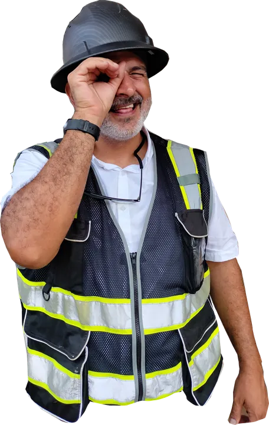

Inspección final y fedatarios en Guayaquil: cómo cerrar bien su obra

Muchas empresas creen que el permiso termina cuando se aprueba el registro de construcción. En realidad, el trámite se cierra con la inspección final: el Municipio verifica que la obra se construyó según los planos aprobados y actualiza el catastro. Sin ese cierre, el local arrastra un pendiente que aparece justo cuando se necesita la licencia de funcionamiento, una venta o un crédito.
Qué se pide
Depende del tipo de registro:
- Construcción inicial desde 3 viviendas, o locales comerciales y otros usos desde 90 m²: certificado de aprobación de CNEL EP, entre otros documentos.
- Aumento y remodelación en esos mismos rangos: los documentos que determine el fiscalizador según su análisis técnico.
- Remodelación total: certificado de CNEL o planilla de luz, certificado de mejoras de alcantarillado de Interagua o planilla de agua, y carta de responsabilidad estructural.
- Edificios de 3 pisos o más: planos estructurales o carta de responsabilidad estructural.
- Si el registro tuvo disposiciones técnicas de Bomberos: certificado de inspección final del Benemérito Cuerpo de Bomberos de Guayaquil.
Para edificaciones de hasta dos viviendas o comercios menores de 90 m² no se pide documentación adicional.
Qué son los fedatarios
Desde 2018 el Municipio de Guayaquil delega parte de las inspecciones de obra en fedatarios: profesionales de la construcción coordinados por la Cámara de la Construcción de Guayaquil, que verifican en sitio la obra con permiso aprobado. Su informe es parte del cierre, y su costo es un gasto a terceros que conviene presupuestar desde el inicio.
Cambios durante la obra
Si la obra cambió respecto de los planos aprobados (otra distribución, más área, otra fachada), hay que tramitar una modificación de planos antes de la inspección final. Si no, la inspección encontrará diferencias y el cierre se detiene.
Por qué es el trámite donde las empresas pierden más tiempo
Porque llega cuando el equipo de obra ya se fue: el contratista entregó, el local está listo para abrir y nadie quedó a cargo de reunir certificados. Por eso en nuestra gestión el cierre es una fase con responsable y fecha, no un trámite que queda para después.
Siga leyendo

¿Tiene una obra terminada sin cierre?
Le ayudamos a ponerla al día. Referencia: fedatarios desde $550.

Arquitecto en Guayaquil, Samborondón y Daule. Permisos municipales y obra para viviendas y empresas.